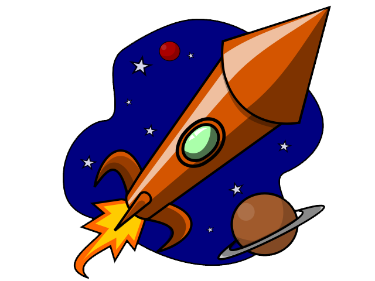

Greetings Earthlings! Did you now our solar system is made up of 8 planets with the sun in the center? The planets are Mercury, Venus, Earth, Mars, Jupiter, Saturn, Uranus, and Neptune.
Find out which planet is the largest planet.
Find out which planet is the smallest.
Find out which planets are gaseous.
Find out which planets are terrestrial.
Planets for Kids
NASA for Kids - Planets
National Geographic for Kids - Planets
| Objectives | 1 Point | 2 Points | 3 Points |
|---|---|---|---|
| Gas Giants Named | 1 Gas Giant Named | 2 Gas Giants Named | 3 or More Gas Giants Named |
| Terrestrial Planets Named | 1 Terrestrial Planet Named | 2 Terrestrial Planets Named | 3 or More Terrestrial Planets Named |
| Smallest and Largest Planets Named | Neither Named | Smallest or Largest Planet Named | Smallest and Largest Planet Named |
At the end of this WebQuest, you will have learned a lot about the Solar System!